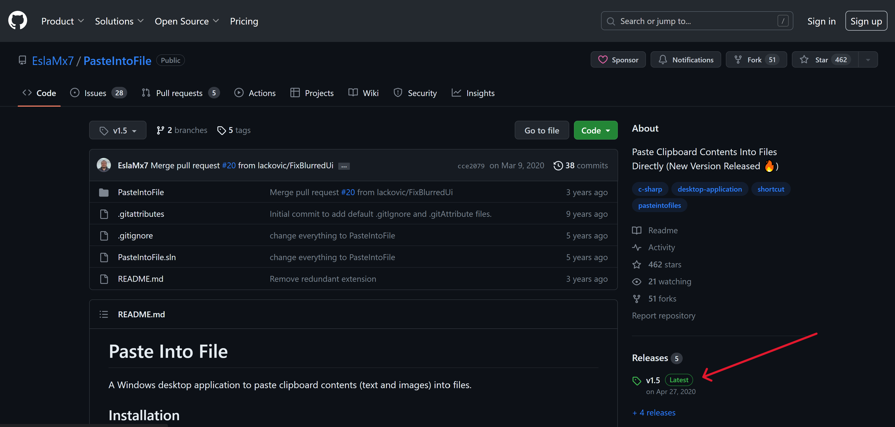

Today I will tell you how to convert clipboard images into files in your desired folder in Windows. I have been writing a lot of blogposts on this website lately and one of the most important things to make a blogpost useful for visitors in my opinion is to add visual screenshots.
This distinguishes the content which is poorly written or AI-generated from content that is "useful". A lot of people run into this problem of converting screenshots to files quickly.
One way to do it is using the snipping tool but this method involves clicking the save button, and navigating to the folder where you want to save the image. If you are writing blog posts daily, this process might get cumbersome
I found this very useful tool to convert my screenshots (copied into the clipboard) to files in Windows. You can convert your screenshots to png or jpg with this free tool.
The name of the tool is "paste into file". All you need to do is to use the snipping tool or some other tool in Windows to get a screenshot of an image (or copy an image from the web) and this tool will convert it to a jpg file of your desired name at your desired folder location - very useful if you take and save screenshots frequently.
Navigate to this GitHub link to download "paste into file". Go to the "releases" section of this GitHub repository as shown below:
Now download the latest release. At the time of writing this blog, the latest version is v1.5 but feel free to choose an updated version if it comes out in the future.
Once downloaded, execute this .exe on your Windows machine by double-clicking it.
You will be asked to add "PasteToFile" to your registry. Go ahead and do it. This utility is open-source and safe to install!
Adding to the registry will give you an option of right-clicking and adding the copied screenshot as a file (I will show you how in a while)
Copy an image to your clipboard using the snipping tool or some other tool. You can also copy an image from your browser by "Right click > Copy Image". I will copy this image from my ML roadmap blog post as shown below:
Once you have copied an image, navigate to any folder and press right-click to open this context menu (Shift right-click if you are using Windows 11). You will see an option to save your copied image as a file. Click it
Choose a file name and press enter (or click save). You can also choose your desired file extension
Your file will be saved to the directory you are in as shown below:
I hope this will help you significantly and make saving screenshots easier for you just like it did for me. This works only on Windows.
Let me know if you have any questions. Happy hacking!